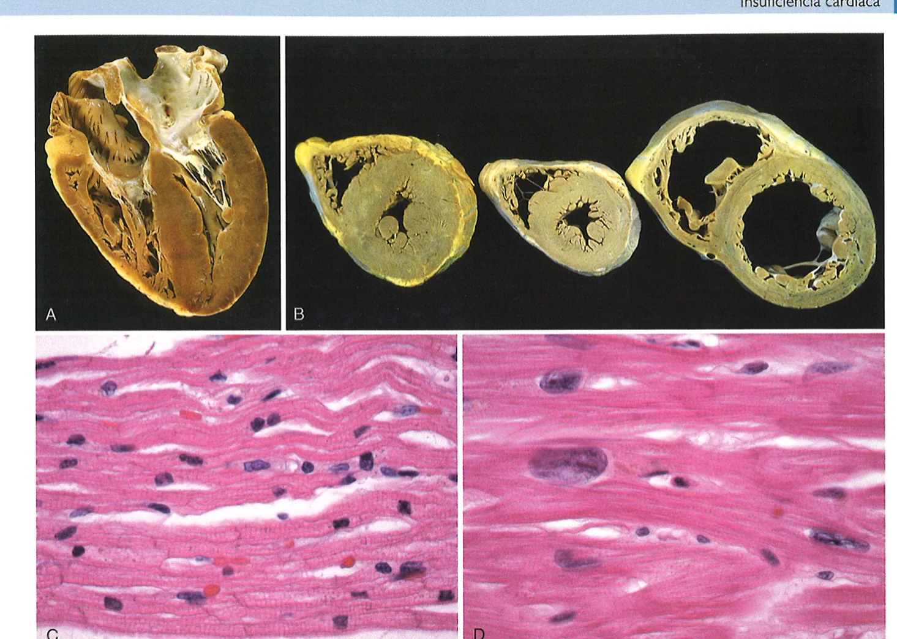
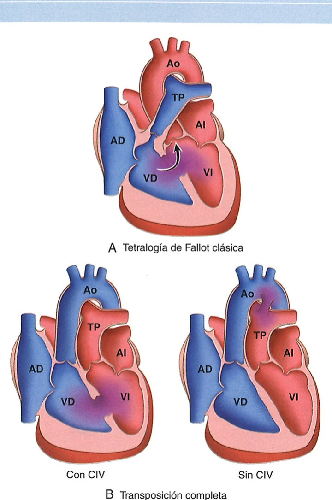
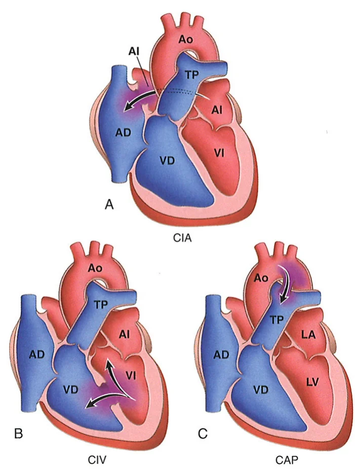
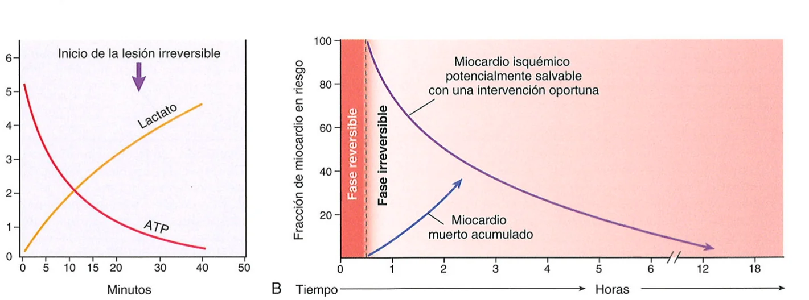
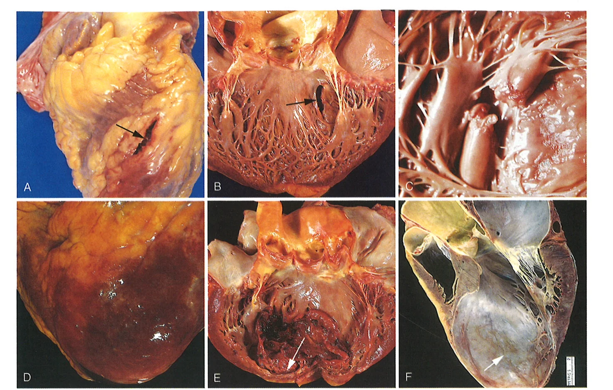
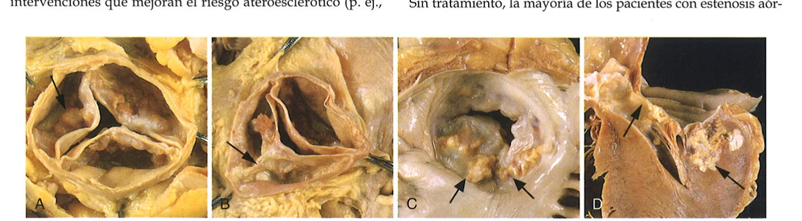
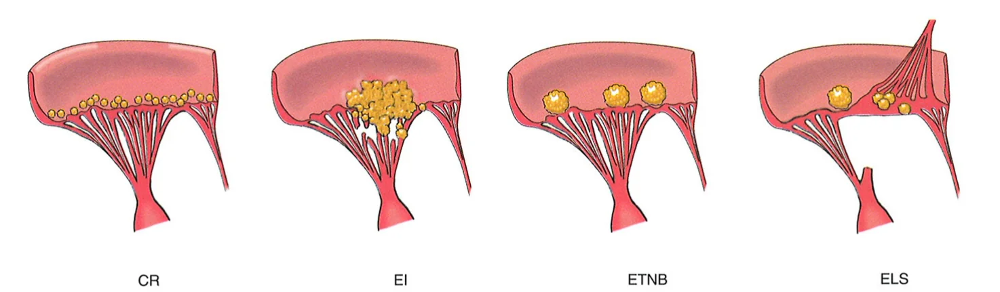
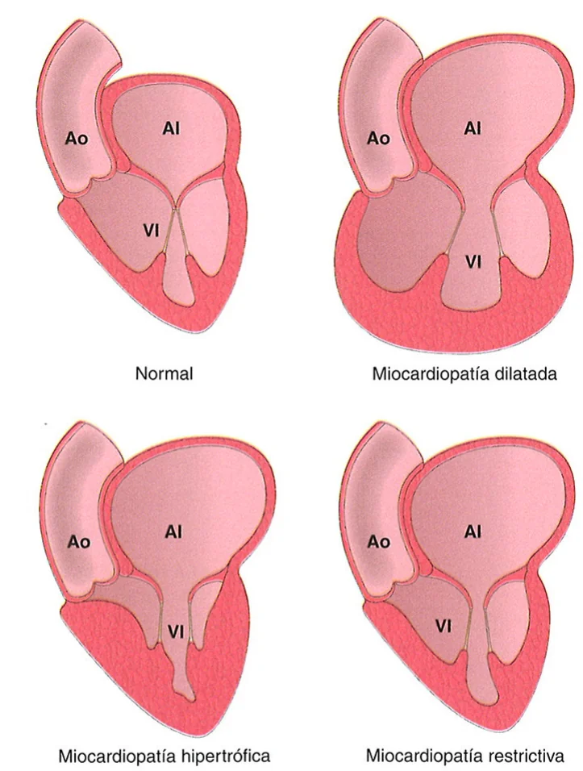

00 Alcance y método
Qué cubre esta guía
AlcanceCapítulo 12 del Robbins y Cotran, 10ª edición: páginas impresas 527-582 (56 páginas), contrastadas con el OCR del capítulo. Cada afirmación clínica lleva la página de origen.
Las citas p. N corresponden a la página impresa del libro. El texto se contrastó con el OCR del capítulo.
★ Repaso rápido
Lo esencial en 60 segundos
Si solo te llevas estas ideas
- BNP sérico es el biomarcador de la insuficiencia cardiaca: si es bajo, alto valor predictivo negativo p. 534.
- Hipertrofia por presión: sarcómeros en paralelo (concéntrica); por volumen: en serie (dilatación). En corazón dilatado, el peso mide mejor la hipertrofia p. 530.
- IAM: necrosis a los 20-30 min; extensión máxima a las 3-6 h; troponinas suben a las 2-4 h y culminan a las 24-48 h p. 544-545, 550.
- Rotura del miocardio en días 3-7; aneurisma ventricular se asocia a trombo mural y arritmias pero nunca se rompe p. 551-552.
- Las 4 endocarditis verrugosas: reumática (líneas de cierre), infecciosa (destructiva), ETNB (válvulas normales, hipercoagulabilidad), Libman-Sacks (LES) p. 562-565.
- Miocardiopatías: dilatada (90%, TTN), hipertrófica (MYBPC3/MYH7, MSC en deportistas jóvenes) y restrictiva (amiloidosis) p. 567-572.
01 pp. 528-567
Ideas clave
Ideas clave
- El corazón pesa 250-320 g en la mujer y 300-360 g en el hombre (~0,4-0,5% del peso corporal); aumento de peso/engrosamiento = hipertrofia, aumento de cavidad = dilatación, ambos = cardiomegalia p. 528.
- Los miocardiocitos auriculares almacenan péptido natriurético auricular y los ventriculares péptido natriurético tipo B (BNP); ambos se liberan por distensión y producen vasodilatación, natriuresis y diuresis p. 528. El BNP sérico es el biomarcador cuantitativo de la insuficiencia cardiaca (IC): una cifra baja tiene alto valor predictivo negativo p. 534.
- La IC es el estadio final común de casi toda cardiopatía crónica; en EE. UU. afecta a >5 millones de personas (2% de la población), provoca >1 millón de ingresos/año y contribuye a ~300.000 muertes; la mitad fallece en 5 años y 1 de cada 9 muertes la incluye como causa contribuyente p. 530.
- La hipertrofia por sobrecarga de presión dispone los sarcómeros en paralelo (hipertrofia concéntrica); la por sobrecarga de volumen los dispone en serie (dilatación). En corazones dilatados, el peso (no el espesor de pared) es la mejor medida de hipertrofia p. 530.
- Las cardiopatías congénitas (CPC) surgen por errores de embriogenia en las semanas 3-8 de gestación; la causa más frecuente es la trisomía 21 (40% de los Down tienen malformación cardiaca) y la lesión génica clásica es la deleción 22q11.2 / TBX1 (síndrome de DiGeorge) p. 535.
- Cortocircuitos izquierda-derecha (CIA, CIV, CAP): no cianóticos, pero pueden volverse derecha-izquierda por enfermedad vascular pulmonar irreversible (síndrome de Eisenmenger); a partir de ese punto el defecto es inoperable p. 536.
- No confundir CIA con persistencia del agujero oval (PAO): la CIA es defecto de formación; el PAO es falta de cierre de una estructura normal, presente en 20% de los adultos, con riesgo de embolia paradójica p. 537.
- La tetralogía de Fallot es la CPC cianótica más frecuente: CIV + estenosis subpulmonar + aorta acabalgada + hipertrofia del VD, las tres primeras por desplazamiento anterosuperior del tabique infundibular p. 538.
- En la cardiopatía isquémica (CPI), >90% de los casos se deben a ateroesclerosis coronaria; la estenosis crítica (>70% del área transversal) marca el umbral de angina de esfuerzo y la rotura/erosión aguda de placa con trombosis explica los síndromes coronarios agudos p. 542.
- El IAM: necrosis solo tras 20-30 min de isquemia grave; la necrosis comienza subendocárdica y alcanza su extensión máxima a las 3-6 h. Las troponinas T e I se elevan a las 2-4 h y culminan a las 24-48 h p. 544-545, 550.
- La fiebre reumática sigue a faringitis por estreptococo del grupo A (reacción cruzada anti-proteína M), con cuerpos de Aschoff y células de Anichkov ("célula oruga"); la cardiopatía reumática crónica es prácticamente la única causa de estenosis mitral p. 560-561.
- Las miocardiopatías: dilatada (90% de los casos, disfunción sistólica, mutaciones truncantes de TTN/titina hasta en 20%), hipertrófica (1/500, 100% genética, proteínas sarcoméricas MYBPC3 y MYH7) y restrictiva (la menos frecuente, amiloidosis como causa principal) p. 567-568, 572.
02 pp. 528-529
Corazón normal y envejecido
Estructura cardiaca
- Peso promedio 250-320 g (mujer) y 300-360 g (hombre); cardiomegalia = hipertrofia y/o dilatación p. 528.
- Miocardiocitos del VI en disposición circunferencial espiral (contracción fuerte punta-base); los del VD están menos organizados y generan fuerzas menores p. 528.
- Válvulas: tres capas , fibrosa (colágeno denso, cara de flujo de salida), esponjosa (tejido laxo central) y ventricular o auricular (elastina, cara de flujo de entrada). Se nutren por difusión; el endotelio valvular no expresa antígenos ABO ni de histocompatibilidad, lo que permite usar bioprótesis criopreservadas p. 528.
- Las válvulas semilunares dependen solo de las cúspides (la dilatación de la raíz aórtica causa insuficiencia); las auriculoventriculares dependen además de cuerdas tendinosas y músculos papilares (dilatación del VI, rotura de cuerda o disfunción papilar causan insuficiencia mitral) p. 528.
- Sistema de conducción: nódulo SA (marcapasos, 60-100 lpm, en la unión de la orejuela derecha con la VCS), nódulo AV (compuerta que retrasa la señal para que la contracción auricular preceda a la ventricular), haz de His, ramas derecha/izquierda y red de Purkinje. Cualquier célula puede actuar como marcapasos de escape (ritmo de la unión, más lento). La frecuencia responde a tono vagal, catecolaminas, hipoxia y potasio (la hiperpotasemia bloquea por completo la transmisión) p. 528.
- Las coronarias son arterias terminales funcionales con circulación colateral anatómica; la perfusión miocárdica ocurre en diástole (~2/3 del ciclo en reposo), por lo que la taquicardia puede deteriorar la perfusión p. 528-529.
- Regeneración: el recambio de miocardiocitos en adultos es <1% anual; las células madre implantadas no se integran a la conducción y crean focos arrítmicos p. 529.
Envejecimiento (tabla 12.1)
- Envejecimiento: la mayoría de las cardiopatías aumenta con cada década; el VI se acorta base-punta y el tabique sigmoideo (protrusión basal al tracto de salida, agravada por hipertensión) puede simular obstrucción p. 529.
- Válvulas: calcificación aórtica y anular mitral, engrosamiento fibroso valvar, valvas mitrales "combadas" hacia la AI, excrecencias de Lambl; coronarias epicárdicas tortuosas, menos distensibles, calcificadas y con placas; aorta dilatada/alargada con fragmentación de la elástica p. 529.
- Miocardio: menor masa, atrofia parda con lipofuscina, degeneración basófila y depósitos de amiloide (transtiretina) en octogenarios, que endurecen el corazón y reducen el llenado diastólico p. 529.
03 pp. 527-536
Desarrollo del corazón
- El corazón humano es el primer órgano plenamente funcional del desarrollo (~8 semanas de gestación); impulsa >7.500 l de sangre al día y late >40 millones de veces al año. La enfermedad cardiovascular es la primera causa de muerte mundial; en EE. UU. explica ~1 de cada 4 muertes (~610.000/año), más que todos los cánceres juntos p. 527.
- Los precursores cardiacos derivan del mesodermo lateral y migran a la línea media en dos oleadas (primer y segundo campos cardiacos) en los primeros 15 días: la primera puebla el ventrículo izquierdo; la segunda, el tracto de salida, el ventrículo derecho y la mayor parte de las aurículas , de ahí que los defectos de cada campo expliquen CPC de estructuras definidas p. 534.
- Cronología: tubo cardiaco latiente el día 20; cavidades básicas ~8 días después; células de la cresta neural tabican los tractos de salida aórtico y pulmonar y forman el cayado; los cojinetes endocárdicos forman los canales AV y tractos de salida. Al día 50 hay corazón de cuatro cavidades p. 534.
- La morfogenia depende de las vías Wnt, Hedgehog, VEGF, BMP, TGF-β, FGF y Notch, de factores de transcripción (mayormente autosómicos dominantes con pérdida parcial de función) y de micro-ARN específicos que coordinan la expresión de esos factores p. 534-535.
- Puesto que los pacientes son heterocigotos, una reducción de ~50% (o menos) de la actividad de un factor de transcripción basta para alterar el desarrollo; estresores ambientales del primer trimestre pueden producir defectos adquiridos que imitan las mutaciones hereditarias. Las pruebas genéticas se indican en síndromes no cardiacos acompañantes o antecedentes familiares de CPC p. 536.
- Las fuerzas hemodinámicas influyen también en el desarrollo: una hipertrofia o dilatación ya se manifiesta ante alteraciones del flujo intrauterino p. 534.
04 pp. 529-556
Insuficiencia cardiaca e hipertrofia
Fisiopatología general
Los seis mecanismos principales que dañan el corazón son: insuficiencia de la bomba (disfunción sistólica o diastólica), obstrucción al flujo (estenosis aórtica, hipertensión, coartación), regurgitación del flujo (sobrecarga de volumen), derivación del flujo (cortocircuitos), trastornos de la conducción y rotura del corazón o de un vaso principal (hemotórax por herida aórtica, shock, muerte) p. 529.
- Mecanismos compensadores: Frank-Starling (el llenado creciente aumenta los enlaces cruzados actina-miosina y el volumen sistólico), activación neurohumoral (noradrenalina adrenérgica; SRAA con retención hidrosalina y tono vascular; péptido natriurético auricular contrarrestando al SRAA) e hipertrofia/remodelación ventricular p. 530.
- La IC izquierda tiene síntomas de congestión pulmonar; la derecha, de congestión sistémica; en la descompensación crónica muchos pacientes son biventriculares. Herramientas: BNP sérico (alto valor predictivo negativo si es bajo) y ecocardiograma (FE, movimiento de pared, función valvular, trombos murales) p. 534.
- Tratamiento: corregir la causa subyacente; restricción de sal, diuréticos, inótropos positivos, IECA (que además limitan la hipertrofia y el remodelado), resincronización cardiaca (marcapasos biventricular) y DAV p. 534.
- FE normal: 45-65%. Disfunción sistólica = FE baja; disfunción diastólica = ventrículo rígido que no se llena (hipertrofia, fibrosis, amiloidosis, pericarditis constrictiva) p. 530.
- La hipertrofia patológica no va acompañada de aumento proporcional de capilares → corazón vulnerable a isquemia; además hay fibrosis intersticial y expresión de genes fetales (miosina fetal, péptidos natriuréticos, colágeno) y genes inmediatos-tempranos (FOS, JUN, MYC, EGR1) p. 531.
- La cardiomegalia es factor de riesgo independiente de muerte súbita. El ejercicio aeróbico produce hipertrofia fisiológica con aumento de la densidad capilar; el ejercicio estático (pesas) solo hipertrofia de presión ligera p. 532.


Insuficiencia izquierda
- Causas más frecuentes: CPI, hipertensión, valvulopatía aórtica y mitral, miocardiopatías primarias p. 532.
- Morfología: VI hipertrofiado y dilatado; dilatación secundaria de la AI (fibrilación auricular, trombos en la orejuela); pulmones congestivos con macrófagos cargados de hemosiderina ("células de la insuficiencia cardiaca") y derrame pleural p. 532.
- Clínica: disnea de esfuerzo → ortopnea → disnea paroxística nocturna; estertores finos basales; S3 (sobrecarga de volumen) o S4 (rigidez) p. 532.
- La hipoperfusión renal activa el SRAA (retención hidrosalina que agrava el edema) y puede causar azoemia; la hipoperfusión cerebral, encefalopatía hipóxica p. 533.
Insuficiencia derecha (corazón pulmonar)
- La causa más frecuente es la insuficiencia izquierda; la forma aislada se debe a enfermedad pulmonar o vascular pulmonar (hipertensión pulmonar primaria, tromboembolia de repetición, apnea obstructiva del sueño) p. 533.
- Congestión pulmonar mínima; predomina la congestión venosa sistémica y porta: hepatomegalia en nuez moscada, necrosis centrolobulillar y cirrosis cardiaca en casos crónicos, esplenomegalia congestiva, ascitis, edema pretibial/presacro, anasarca; azoemia más marcada que en la IC izquierda p. 533.
- Corazón pulmonar agudo: embolia pulmonar masiva con dilatación del VD sin hipertrofia; crónico: pared del VD hasta ≥1,0 cm p. 556.
05 pp. 535-541
Cardiopatías congénitas
- Incidencia ~1% de nacidos vivos (malformaciones graves); >5% de neonatos tienen CIV o CIA musculares pequeñas que suelen cerrarse solas. La válvula aórtica bicúspide tiene incidencia de 1-2% y no se cuenta entre las CPC p. 535.
- Doce trastornos suman ~85% de los casos; frecuencias (tabla 12.2): CIV 42%, CIA 10%, estenosis pulmonar 8%, CAP 7%, tetralogía de Fallot 5%, coartación de aorta 5%, defecto del tabique AV 4%, estenosis aórtica 4%, TGA 4%, tronco arterioso 1%, TAPVR 1%, atresia tricúspide <1% p. 535.
- Causa genética conocida más frecuente: trisomía 21; síndromes congenes: DiGeorge (TBX1, 22q11.2), Alagille (JAG1, NOTCH2), Noonan (PTPN11, KRAS), Holt-Oram (TBX5), CHARGE (CHD7). GATA4, NKX2.5 y TBX5 se unen entre sí y corregulan genes; mutaciones de NOTCH1 causan válvula aórtica bicúspide p. 535-536.
- La causa exacta se desconoce en ~90% de los casos; los suplementos de folato precoz reducen la incidencia p. 535-536.
- Epidemiología del adulto con CPC: número creciente (~1,5 millones en EE. UU.); la reparación posnatal precoz no siempre restablece la normalidad , quedan cambios pulmonares o miocárdicos irreversibles, arritmias por cicatrices quirúrgicas, complicaciones de materiales protésicos y riesgo de descompensación en la gestación p. 535.
- Cortocircuito derecha-izquierda: cianosis, policitemia, dedos en palillo de tambor (acropaquias), osteoartropatía hipertrófica y embolia paradójica. Los "5 T": Tetralogía de Fallot, TGA, Tronco arterioso, T atresia tricúspide, TAPVR (conexión total anómala de venas pulmonares) p. 536.
CIA y persistencia del agujero oval
- Morfología por localización: 90% tipo ostium secundum (fallo del septo segundo, centro del tabique; únicos, múltiples o fenestrados, generalmente sin otras anomalías); 5% tipo primum (adyacente a las válvulas AV, asociado a anomalía valvular AV y/o CIV); 5% tipo seno venoso (junto a la desembocadura de la VCS, a veces con retorno venoso pulmonar anómalo a la AD) p. 537.
- Clínica: asintomáticas hasta la edad adulta; flujo pulmonar 2-8 veces lo normal; soplo por flujo excesivo a través de la válvula pulmonar y/o la CIA; se toleran bien y no suelen dar síntomas antes de los 30 años; la hipertensión pulmonar irreversible es inusual. Cierre quirúrgico o intravascular para prevenir IC, embolia paradójica y enfermedad vascular pulmonar; mortalidad baja y supervivencia postoperatoria comparable a la población general p. 537.
- Embriología del tabique: el septo primero deja el orificio primum, luego orificio secundum; el septo segundo cubre ese orificio dejando el agujero oval, cuya válvula se abre solo si la presión derecha supera la izquierda; al nacer caen las presiones pulmonares y la válvula se cierra p. 537.
- El agujero oval se sella en el 80% antes de los 2 años; en el 20% restante, aumentos transitorios de presión derecha (defecar, toser, estornudar) o hipertensión pulmonar mantenida permiten cortocircuito breve derecha-izquierda con riesgo de embolia paradójica p. 537.
CIV y CAP
- CIV: la CPC más frecuente; 90% membranosas (2-3 cm de diámetro, inmediatamente proximal a la válvula aórtica), 10% infundibulares (bajo la válvula pulmonar) o musculares (pueden ser múltiples); la mayoría de las musculares pequeñas (50%) cierran espontáneamente; solo el 20-30% de las CIV pediátricas son aisladas; la CIV detectada por primera vez en el adulto suele ser aislada p. 537-538.
- CIV grandes: cortocircuito izquierda-derecha importante desde el nacimiento, hipertrofia precoz del VD e hipertensión pulmonar; sin cierre evolucionan casi siempre a enfermedad vascular pulmonar irreversible con inversión del flujo y cianosis. El cierre de las CIV asintomáticas se retrasa hasta después del lactante esperando el cierre espontáneo; los defectos grandes se corrigen temprano p. 538.
- CAP: el conducto une la arteria pulmonar con la aorta distal a la subclavia izquierda; se cierra funcionalmente a los 1-2 días de vida por oxigenación, caída de resistencias pulmonares y descenso local de prostaglandina E; obliteración completa en los primeros meses (ligamento arterioso). Soplo continuo "en maquinaria". ~7% de las CPC, 90% aislado. Tratamiento: inhibidores de prostaglandinas; en cambio, mantenerlo abierto con prostaglandina E salva la vida en atresia de válvula aórtica o pulmonar p. 538.
Tetralogía de Fallot y TGA
- TF: corazón normalmente aumentado de tamaño, clásicamente en "forma de bota" por hipertrofia del VD; CIV grande con aorta acabalgada en el borde superior; obstrucción subpulmonar por estrechamiento del infundíbulo ± estenosis valvular; a veces atresia pulmonar completa (supervivencia obligada a CAP, arterias bronquiales dilatadas o ambos); insuficiencia aórtica o CIA posibles; cayado derecho en 25% p. 538.
- Clínica TF: según la gravedad de la estenosis subpulmonar se tolera hasta la vida adulta (sin cirugía, 10% vivo a los 20 años y 3% a los 40); estenosis leve → "tetralogía rosada" (cortocircuito izquierda-derecha, sin cianosis); grave → cianosis desde el nacimiento. Cuanto más grave la estenosis, más hipoplásicas las arterias pulmonares y mayor el acabalgamiento; el orificio pulmonar no crece con el niño, por lo que la obstrucción empeora. La estenosis "protege" el lecho pulmonar y descomprime el VD (insuficiencia derecha infrecuente). La reparación completa es posible, más compleja con atresia pulmonar y arterias bronquiales dilatadas p. 538-539.
- D-TGA: discordancia ventrículoarterial con conexiones auriculoventriculares normales (concordantes); embriológicamente por formación anómala de los tabiques troncal y aortopulmonar en espiral. Separa las circulaciones pulmonar y sistémica: incompatible con la vida salvo cortocircuito de mezcla (CIV en ~35%, cortocircuitos estables; los otros ~65% dependen de agujero oval o CAP, que se cierran pronto → septostomía auricular con balón en los primeros días). VD hipertrofiado como ventrículo sistémico, VI atrófico por sostener la circulación pulmonar de baja resistencia. Sin cirugía, la mayoría muere en meses; con intercambio arterial precoz muchos llegan a la vida adulta p. 539-540.
- L-TGA ("corregida congénitamente"): discordancia auriculoventricular + ventrículoarterial doble; no cianótica y puede ser asintomática hasta diagnosticarse en el adulto; aun así hipertrofia al final del VD morfológico con potencial de IC, y se asocia a CIV, CIA y agujero oval persistente p. 540.
- Atresia tricúspide: división desigual del canal AV (mitral grande, VD hipoplásico); cianosis desde el nacimiento, mortalidad precoz elevada p. 540.


Coartación de la aorta y lesiones obstructivas
- Atresia tricúspide: oclusión completa del orificio tricúspide por división desigual del canal AV; válvula mitral mayor de lo normal y VD hipoplásico; la circulación se mantiene por cortocircuito derecha-izquierda (CIA o agujero oval persistente) + CIV que conecta el VI con la arteria pulmonar originada del VD hipoplásico. Cianosis prácticamente desde el nacimiento y mortalidad precoz elevada p. 540.
- Coartación: dos veces más frecuente en varones; también en mujeres con síndrome de Turner. Forma "del lactante" (preductal, hipoplasia tubular del cayado proximal a un CAP abierto, que aporta sangre no oxigenada a la aorta distal; tronco pulmonar dilatado, VD hipertrofiado, cianosis de la mitad inferior del cuerpo; muchos no sobreviven el periodo neonatal sin ocluir el CAP) y "del adulto" (posductal, cresta de músculo liso y fibras elásticas de la media frente al ligamento arterioso cerrado; cayado y ramas proximales dilatados, VI hipertrofiado) p. 540-541.
- En el 50% se acompaña de válvula aórtica bicúspide; también CIA, CIV, insuficiencia mitral y aneurismas del polígono de Willis. Clínica posductal: hipertensión en brazos, pulsos débiles e hipotensión femorales, claudicación, circulación colateral intercostal y mamaria interna con "muescas" costales en la radiografía p. 541.
- Estenosis pulmonar: malformación frecuente, aislada o dentro de TF/TGA; hipertrofia del VD y dilatación postestenótica del tronco pulmonar por los chorros de alta presión (ausente si hay estenosis subpulmonar asociada , tronco normal o hipoplásico). Atresia pulmonar: sin comunicación VD-pulmón, VD hipoplásico + CIA; la sangre llega al pulmón por el CAP. Las estenosis leves permiten vida larga asintomática; con VD muy hipoplásico se deriva la sangre de las cavas a la arteria pulmonar (eludiendo el corazón derecho) p. 541.
- Estenosis aórtica congénita: valvular (cúspides hipoplásicas, displásicas o en número anómalo), subvalvular (anillo o collarete fibroso denso bajo las cúspides; soplo sistólico prominente ± frémito) o supravalvular (displasia de la aorta ascendente; mutaciones del gen de la elastina que alteran su interacción con el músculo liso). La obstrucción grave produce el síndrome del corazón izquierdo hipoplásico (VI y aorta ascendente hipoplásicos, fibroelastosis endocárdica "de porcelana"); depende del CAP abierto y su cierre en la primera semana es mortal; requiere cirugías que convierten el VD en bomba sistémica. La hipertrofia del VI conlleva riesgo de muerte súbita p. 541.
Cortocircuitos y EisenmengerLos cortocircuitos izquierda-derecha (CIA, CIV, CAP) no son cianóticos, pero pueden invertirse si se instala enfermedad vascular pulmonar irreversible (síndrome de Eisenmenger); desde ese punto el defecto es inoperable. Los 5 cortocircuitos derecha-izquierda cianóticos llevan "T" en el nombre p. 536.


06 pp. 542-553
Cardiopatía isquémica
- Presentaciones: infarto de miocardio (IM), angina de pecho, CPI crónica con IC y muerte súbita cardiaca (MSC) p. 542.
- Isquemia ≠ hipoxemia: la isquemia también corta el aporte de nutrientes y la retirada de desechos, por lo que se tolera peor. La taquicardia agrava por doble vía: aumenta la demanda (más contracciones/min) y reduce el suministro (acorta la diástole, cuando ocurre la perfusión). Es la mayor causa individual de muerte en el mundo (>13% de los fallecimientos); en EE. UU. la mortalidad ha caído >50% desde mediados de los años sesenta por control de factores de riesgo (tabaco, colesterol, hipertensión, peso, ejercicio, control glucémico) y avances (estatinas, trombólisis, angioplastia, DIAC, DAV, DAI, resincronización, AAS profiláctico) p. 542.
- Factores que convierten estenosis discretas en sintomáticas: aumento de la demanda (hipertrofia, taquicardia), hipoxemia e hipotensión sistémica (shock) p. 542.
- Las medidas de reserva de flujo coronario a través de la estenosis valoran mejor las consecuencias que el grado anatómico aislado, especialmente con obstrucciones multifocales; las obstrucciones lentas permiten colaterales que mitigan incluso estenosis de alto grado p. 542-543.
- Las placas clínicamente importantes predominan en los primeros centímetros de la DAI y la CxI; la ateroesclerosis de las ramas intramiocárdicas (penetrantes) es infrecuente , por eso la mayoría de las estenosis son accesibles a cateterismo. Puede afectarse un vaso, dos o los tres p. 542-543.
- Es la mayor causa individual de muerte en el mundo (>13% de los fallecimientos); en EE. UU. la mortalidad ha caído >50% desde mediados de los años sesenta por control de factores de riesgo y avances terapéuticos p. 542.
Angina de pecho
- Isquemia transitoria de 15 s a 15 min que no mata miocardiocitos; el dolor media isquemia por adenosina y bradicinina sobre nervios aferentes. Isquemia silente: frecuente en ancianos y neuropatía diabética p. 543.
- Dolor anginoso: por liberación isquémica de adenosina, bradicinina y otras moléculas que estimulan nervios aferentes vagales y simpáticos; sensación clásica de opresión subesternal con irradiación al brazo izquierdo o la hemimandíbula izquierda (dolor referido), que mejora con reposo o vasodilatadores (nitroglicerina, antagonistas del calcio) p. 543.
- Estable (la más frecuente): estenosis fija crónica, no aparece en reposo, reproducible con esfuerzo o estrés emocional. Variante de Prinzmetal: espasmo de la coronaria, infrecuente, no ligada a esfuerzo, frecuencia cardiaca ni presión arterial, puede aparecer en reposo y responde de inmediato a vasodilatadores. Inestable (in crescendo): cada vez más frecuente, prolongada (>20 min) o grave, con esfuerzo decreciente o en reposo; por rotura de placa con trombosis/vasoespasmo y embolización distal (microinfartos); anuncia IM y posible oclusión completa p. 543.
- Isquemia silente: episodios no percibidos, especialmente en ancianos y neuropatía diabética p. 543.
Infarto de miocardio: patogenia
- Secuencia: erosión/rotura de placa → adhesión y activación plaquetaria (tromboxano A2, ADP, serotonina) → trombo oclusivo en minutos. La coronariografía en las 4 h muestra trombosis en ~90%; a las 12-24 h, solo 60% (lisis espontánea). Muchos trombos se forman en placas sin estenosis crítica previa p. 544.
- ~10% de IM sin aterotrombosis: vasoespasmo (con o sin ateroesclerosis; cocaína, efedrina), émbolos de la AI (fibrilación auricular, trombo mural, vegetaciones, material protésico) o paradójicos que cruzan un agujero oval persistente; también vasculitis de pequeños vasos intramurales, drepanocitosis, hipertrofia marcada (estenosis aórtica), shock, y mala protección miocárdica en cirugía cardiaca p. 544.
- Las causas de la obesidad-epidemia y el envejecimiento (duplicación de >65 años proyectada a 2050) amenazan revertir esa tendencia; los IM ocurren solo en una fracción de los individuos con enfermedad coronaria, de modo que el control de factores de riesgo es solo parte de la historia p. 542.
- Epidemiología: ~1,5 millones de IM/año en EE. UU. con ~610.000 muertes; 10% antes de los 40 años y 45% antes de los 65; el sexo masculino aumenta el riesgo en la mediana edad, las mujeres están protegidas en la edad fértil, pero tras la menopausia la CPI es la primera causa de muerte en ancianas , y el tratamiento hormonal de reemplazo no es protector, a veces perjudicial p. 543-544.
- Cronología (tabla 12.4): pérdida de ATP en segundos; pérdida de contractilidad a <2 min (antes de que muera la célula); ATP al 50% a 10 min; lesión irreversible a los 20-40 min (isquemia con flujo ≤10% del normal); lesión microvascular >1 h p. 545.
- La necrosis comienza subendocárdica (última zona en recibir sangre y sometida a altas presiones intramurales); se salva un anillo subendocárdico de ~0,1 mm por difusión desde la luz ventricular p. 545.
- Frente de necrosis completo a las 6-12 h; extensión máxima del infarto a las 3-6 h ("el tiempo es miocardio") p. 545-546.


Patrones y localización del infarto
- Dominancia: la coronaria que perfunde el tercio posterior del tabique; derecha en ~80% de las personas. La DAI irriga punta, pared anterior del VI y 2/3 anteriores del tabique; la ACD, pared posterobasal del VI, tercio posterior del tabique y VD; la CxI, pared lateral p. 546.
- Transmural (>90%: placa + trombosis) vs subendocárdico (trombo lisado, o hipotensión global con daño circunferencial) vs microinfartos multifocales (microembolias, vasculitis, catecolaminas, cocaína) p. 546-547.
- Frecuencias: DAI 40-50% (anterior), ACD 30-40% (inferior/posterior), CxI 15-20% (lateral). Infarto aislado de VD solo 1-3%; el 15-30% de los IM por ACD se extienden al VD p. 547.
Morfología del infarto (tabla 12.5)
- 0-½ h: sin cambios. ½-4 h: fibras onduladas, edema, hemorragia. 4-12 h: necrosis coagulativa, hipereosinofilia, moteado oscuro. 12-24 h: necrosis de bandas de contracción marginal + infiltrado de neutrófilos. 1-3 días: neutrofilos abundantes, centro amarillo-parduzco. 3-7 días: fagocitosis por macrófagos, borde hiperémico, máximo ablandamiento (riesgo de rotura). 7-10 días: tejido de granulación. 10-14 días: colágeno. 2-8 semanas: cicatriz; completa >2 meses p. 547.
- Tinción con cloruro de trifeniltetrazolio (TTC): el miocardio viable (con lactato deshidrogenasa) se tiñe rojo ladrillo; el infarto queda pálido. Útil para infartos de 2-3 h a 12 h, invisibles macroscópicamente sin ella p. 548.
- La cicatrización procede de la periferia al centro; malnutrición, mala vasculatura y corticoides la retrasan. Una vez cicatrizado, el infarto no se data (8 semanas = 10 años) p. 549.
- Reperfusión: rescata miocardio, pero la reperfusión tardía causa lesión por reperfusión (hasta el 50% del tamaño final del infarto) por disfunción mitocondrial (contenido mitocondrial proapoptótico), hipercontractura por sobrecarga de calcio, radicales libres (anión superóxido, peróxido de hidrógeno, ácido hipocloroso, peroxinitrito, radicales hidroxilo), agregación leucocítica ("ausencia de recuperación del flujo") y activación del complemento. Morfología: infarto hemorrágico con necrosis de bandas de contracción (sarcómeros hipercontraídos por entrada de calcio, sin ATP para relajarse) p. 549-550.
- Se realiza con trombólisis (activador del plasminógeno tisular), angioplastia o injerto de derivación coronaria (DIAC); los ensayos destinados a prevenir la lesión por reperfusión han sido infructuosos. La recuperación de la función del miocardio rescatado puede demorarse de horas a días (aturdimiento postisquémico). La prevención primaria y secundaria (control de factores de riesgo) y el pronóstico dependen de la función residual del VI y del grado de obstrucción de los vasos que perfunden el miocardio viable p. 549-553.
- Morfología del IM reperfundido: infarto grande, denso y hemorrágico (lesión vascular con extravasación), p. ej., anteroapical tras estreptocinasa; microscopía con bandas de contracción oscuras que abarcan miofibrillas p. 550.
- Miocardio aturdido: disfunción contráctil prolongada tras isquemia breve, se recupera en días. Miocardio en hibernación: isquemia crónica subletal con metabolismo y función reducidos; la revascularización (DIAC, angioplastia, endoprótesis) restablece la función p. 550.
Diagnóstico y tratamiento del IM
- Dolor torácico >30 min, diaforesis, náuseas y vómitos (afectación posteroinferior con estímulo vagal). Hasta el 25% es asintomático (p. ej., neuropatía diabética) p. 550.
- ECG: IMEST (transmural, elevación del ST) vs IMSEST (subendocárdico). Biomarcador: cTnT y cTnI (reemplazaron a CK-MB); elevación a las 2-4 h, máximo a las 24-48 h; con reperfusión pico más alto y más precoz. La troponina también sube en miocarditis y traumatismos, y hay "extravasación de troponina" de bajo grado en IC, TEP, insuficiencia renal y sepsis (diferenciar con determinaciones seriadas) p. 550.
- Tratamiento: oxígeno, nitratos, antiagregantes (AAS, inhibidores del receptor de ADP, GPIIb/IIIa), anticoagulantes, β-bloqueantes, reperfusión inmediata (fibrinolíticos o catéter) p. 551.
Complicaciones del IAM
- Mortalidad intrahospitalaria 7-8% (IMEST 10%, IMSEST 6%); un tercio de los IMEST extrahospitalarios mueren por arritmia en la primera hora. Casi 75% de los pacientes sufre alguna complicación p. 551.
- Shock cardiógeno: ~10% de los IM transmurales; asocia infartos que dañan ≥40% del VI p. 551.
- Rotura del miocardio: 1-5% de los IM, mortal; pared libre → hemopericardio y taponamiento; tabique → CIV; músculo papilar → insuficiencia mitral grave. Ocurre en los días 3-7 (miocardio necrótico lisado en tejido de granulación blando). Riesgo: >60 años, sexo femenino, infarto anterior/lateral, primer IM (la cicatriz previa "refuerza"), ausencia de hipertrofia del VI p. 551.
- Arritmias: ~90% de los pacientes; máximo riesgo de fibrilación ventricular en la primera hora; más frecuentes en IMEST p. 551.
- Pericarditis fibrinohemorrágica a los 2-3 días (IM transmural); síndrome de Dressler semanas después por autoanticuerpos antimiocardio p. 552.
- Expansión del infarto con adelgazamiento de pared; trombo mural (estasis + endocardio dañado) con riesgo embólico; aneurisma ventricular tardío tras infarto anteroseptal grande , asociado a trombos, arritmias e IC, pero no se rompe p. 552.
- Riesgo según localización: anteriores → rotura, expansión, trombo mural, aneurisma; posteriores → bloqueos de conducción e infarto de VD. Mal pronóstico: sexo femenino, >70 años, IM previo, diabetes. Mortalidad total al primer año 30%, luego 3-4% anual p. 552-553.


Cardiopatía isquémica crónica
- Cardiopatía isquémica crónica: IC congestiva progresiva por daño isquémico acumulado ("miocardiopatía isquémica"); habitual tras IM previo, por descompensación del miocardio no infartado hipertrófico, pero también puede debutar como IC sin infarto previo. Representa casi el 50% de los receptores de trasplante cardiaco. Corazón pesado, VI hipertrofiado y dilatado, ateroesclerosis estenótica invariable, cicatrices de infartos, engrosamientos fibrosos parcheados del endocardio mural (cizallamiento anómalo) y a veces trombos murales; micro: hipertrofia, vacuolización de miocardiocitos subendocárdicos (isquemia crónica) y fibrosis intersticial p. 553.
El tiempo es miocardioPérdida de contractilidad a los 1-2 min, antes de que muera la célula; necrosis a los 20-30 min, comenzando subendocárdica. El frente de necrosis es completo a las 6-12 h y la extensión máxima se alcanza a las 3-6 h p. 545-546.
07 pp. 554-555
Arritmias y muerte súbita cardiaca
- Síndrome del seno enfermo (bradicardia de escape), fibrilación auricular ("irregularmente irregular" por dilatación auricular), bloqueo AV de 1.º (P-R prolongado), 2.º (transmisión intermitente) y 3.º (fracaso completo) p. 554.
- Los circuitos de reentrada , favorecidos por isquemia, hipertrofia, inflamación, fibrosis o depósito de material no conductor (amiloide) , causan taquicardia ventricular que puede degenerar en fibrilación ventricular p. 554.
- Canalopatías (tabla 12.6): trastornos mayormente autosómicos dominantes de genes de canales de Na⁺, K⁺ y Ca²⁺ o de sus proteínas accesorias; las mutaciones con pérdida de función producen QT largo y las con ganancia de función, QT corto. Síndrome del QT largo (KCNQ1, KCNH2, SCN5A, CAV3): sincopes con estrés o MSC, algunos tipos asociados a la natación; QT corto (KCNQ1, KCNH2, SCN5A): palpitaciones, sincope, MSC; síndrome de Brugada (SCN5A, CACNB2b, SCN1b): elevación del ST y bloqueo de rama derecha sin cardiopatía estructural, sincope o MSC en reposo, durante el sueño o tras comidas copiosas; TVPC (RYR2, CASQ2, liberación diastólica de Ca²⁺): presenta en la infancia con estrés, sin ECG característico p. 554.
- MSC: muerte inesperada por causa cardiaca, sin síntomas o dentro de las 1-24 h del inicio (los criterios varían según el autor); 180.000-450.000 casos/año en EE. UU. Mecanismo casi siempre arritmia mortal (fibrilación ventricular o asistolia) por irritabilidad eléctrica del miocardio distante al sistema de conducción. Primera causa: EAC , puede ser la primera manifestación de la CPI; solo 10-20% de las víctimas tiene rotura aguda de placa y el 80-90% de los reanimados no muestra necrosis enzimática ni en el ECG; IM antiguo cicatrizado en ~40% y vacuolización subendocárdica (isquemia crónica) como rasgo habitual p. 555.
- En jóvenes predominan causas no ateroescleróticas: canalopatías, miocardiopatías dilatada o hipertrófica, anomalías coronarias congénitas, miocarditis, prolapso mitral, hipertensión pulmonar, taponamiento, embolia pulmonar, trastornos metabólicos, catecolaminas, cocaína y metanfetamina. Con el descenso de la CPI crece la MSC en corazones hipertróficos y fibróticos (hipertensión, obesidad, consumo de sustancias) sin EAC. Tratamiento preventivo: fármacos y desfibrilador automático implantable p. 555.
08 pp. 555-556
Cardiopatía hipertensiva
- Criterios patológicos: hipertrofia concéntrica del VI sin otra cardiopatía + evidencia clínica o anatomopatológica de hipertensión en otros órganos (riñón). El estudio Framingham demostró que incluso hipertensión leve (~140/90 mmHg) prolongada induce hipertrofia del VI; ~30% de la población de EE. UU. tiene cifras de ese grado; con las directrices actuales (>120/80 mmHg), casi la mitad de la población general p. 555.
- Evolución posible: longevidad normal; CPI (la hipertensión potencia la ateroesclerosis y la isquemia de demanda del músculo hipertrófico); daño renal o ACV; IC progresiva o MSC. El control eficaz previene la hipertrofia y puede hacerla involucionar p. 556.
- Clínica: la CPH sistémica compensada es asintomática (solo signos de VI grande en ECG/ecocardiograma); a menudo debuta con fibrilación auricular por dilatación de la AI o con ICC progresiva p. 556.
- Morfología: peso cardiaco >500 g, pared del VI >2,0 cm, luz reducida; rigidez diastólica con dilatación de la AI (fibrilación auricular como forma de presentación); fibrosis intersticial p. 555-556.
- Evolución: longevidad normal, CPI, ACV o daño renal, IC progresiva o MSC. El control de la presión puede hacer involucionar la hipertrofia p. 556.
- VD y aurícula derecha hipertrofiados y dilatados; el ventrículo derecho hipertrofiado puede comprimir la cavidad del VI o causar insuficiencia y engrosamiento fibroso tricúspide; hipertrofia leve = engrosamiento del haz muscular del tracto de salida o de la banda moderadora (une el tabique con el músculo papilar anterior del VD) p. 556-557.
- Causas del corazón pulmonar (tabla 12.7): parénquima (EPOC, fibrosis intersticial difusa, neumoconiosis, fibrosis quística, bronquiectasias), vasos (tromboembolia de repetición, hipertensión pulmonar primaria, arteritis pulmonar, fármacos/tóxicos/radiación, microembolias tumorales), pared torácica (cifoescoliosis, obesidad marcada/apnea del sueño/síndrome de Pickwick, enfermedades neuromusculares) y vasoconstricción pulmonar (acidosis metabólica, hipoxemia, mal de altura crónico, obstrucción de vías respiratorias principales, hipoventilación alveolar idiopática). Recordar: la hipertensión pulmonar es más frecuente como complicación de una cardiopatía izquierda [p. 556, tabla 12.7].
09 pp. 557-562
Cardiopatía valvular
- Estenosis = fallo de apertura (proceso crónico, anomalía primaria de las valvas); insuficiencia/regurgitación = fallo de cierre (valvas propias o aparato de soporte; puede ser aguda). Ambas llevan a hipertrofia de presión o de volumen y, en último término, IC; los chorros de alta velocidad por las válvulas estenóticas dañan el endocardio p. 557.
- Causas principales: estenosis aórtica → calcificación degenerativa o de válvula bicúspide; insuficiencia aórtica → dilatación de la aorta ascendente (hipertensión, envejecimiento, sífilis, espondilitis anquilosante, síndrome de Marfan, aneurisma/disección); estenosis mitral → cardiopatía reumática; insuficiencia mitral → prolapso mitral, dilatación del VI, rotura de cuerdas o de músculo papilar, calcificación anular [p. 557, tabla 12.8].
| Mecanismo | Válvula aórtica | Válvula mitral |
|---|---|---|
| Estenosis | Estenosis aórtica calcificada senil; calcificación sobre válvula deformada congénita; cicatriz postinflamatoria (reumática) | Casi exclusivamente cardiopatía reumática |
| Insuficiencia intrínseca (valvas) | Cicatriz postinflamatoria; endocarditis infecciosa | Anomalías de valvas y comisuras; cicatriz reumática; endocarditis infecciosa; prolapso mitral; fibrosis por fenfluramina/fentermina |
| Insuficiencia por aparato de soporte | Dilatación degenerativa de la aorta; aortitis sifilítica; espondilitis anquilosante; síndrome de Marfan; aneurisma/disección | Rotura de cuerdas; fibrosis/disfunción de músculo papilar; dilatación del VI (miocarditis, MCD); calcificación del anillo |
Fuente: [p. 557, tabla 12.8].
Estenosis aórtica calcificada y válvula bicúspide
- La valvulopatía más frecuente; prevalencia 2% y en aumento. Sobre válvula normal aparece en la 7.ª-9.ª décadas; sobre bicúspide congénita (1% de la población), una a dos décadas antes. La VAB calcificada causa ~50% de las estenosis aórticas del adulto p. 557-559.
- Patogenia: degeneración por estrés mecánico con depósito de hidroxiapatita; contiene células parecidas a osteoblastos; las estatinas no la previenen (a diferencia de la ateroesclerosis). Macro: masas calcificadas en las cúspides sin fusión de comisuras (clave para diferenciar de la reumática); micro: calcificación comienza en la capa fibrosa en los puntos de flexión; posible hueso metaplásico p. 557-558.
- Clínica: área valvular cae de ~4 cm² a 0,5-1 cm² (estenosis grave), presiones del VI >200 mmHg. La tríada angina, sincope e IC anuncia descompensación: sin tratamiento, muerte en 5 años desde la angina, 3 años desde el sincope y 2 años desde la IC. Tratamiento: recambio valvular (RTVA transcatéter incluido); el tratamiento médico es ineficaz p. 558-559.
- VAB: cúspides desiguales con rafe (lugar de calcificación); complica con insuficiencia aórtica, endocarditis infecciosa y dilatación/disección aórtica (pared aórtica estructuralmente anómala). NOTCH1 (9q34.3) mutado en algunas familias p. 559.


Calcificación del anillo mitral
- Nódulos pétreos (2-5 mm) en el anillo, sin afectar habitualmente la función; puede causar insuficiencia, estenosis, arritmias/MSC por invasión del sistema de conducción, ACV embólico y servir de nido para endocarditis. Más frecuente en mujeres mayores y en el prolapso mitral p. 559.
Prolapso de la válvula mitral (PVM)
- Prolapso mitral (PVM): 2-3% de los adultos en EE. UU., más frecuente en mujeres; habitual hallazgo incidental. Etiología desconocida en la mayoría; rara vez asociado a síndrome de Marfan (FBN1, con señalización TGF-β desregulada); en ratones con FBN1 mutado, el fenotipo se previene con inhibidores de TGF-β (el exceso de TGF-β causa la laxitud y los cambios mixomatosos) p. 559.
- Morfología: valvas abombadas ("en campana"), redundantes, gruesas y elásticas; cuerdas alargadas, adelgazadas o rotas; anillo a veces dilatado; posible afectación concomitante de tricúspide, aórtica o pulmonar. Histología: degeneración mixomatosa de la capa esponjosa (matriz hidrófila altamente sulfatada) con capa fibrosa colágena atenuada , se tinta con pentacrómico de Movat (colágeno amarillo, elastina negra, proteoglucanos azules) p. 559-560.
- Cambios secundarios por la hipermovilidad: 1) engrosamiento fibroso de las valvas donde se rozan; 2) engrosamiento fibroso lineal del endocardio del VI donde chocan las cuerdas alargadas; 3) engrosamiento del endocardio mural auricular/ventricular por fricción; 4) trombos en superficies auriculares de las valvas y paredes auriculares; 5) calcificaciones focales en la base de la valva posterior. La degeneración mixomatosa también puede ser secundaria a insuficiencia por otras causas (p. ej., disfunción isquémica) p. 559-560.
- Clínica: chasquido mesosistólico ± soplo de insuficiencia; ~3% desarrolla complicaciones graves: endocarditis infecciosa, insuficiencia mitral (rotura de cuerdas), ACV por embolia de trombos valvulares, arritmias; rara vez MSC p. 559-560.
Fiebre reumática y cardiopatía reumática
- Inflamación multisistémica mediada por inmunidad a las 2-3 semanas de una faringitis por estreptococo del grupo A (a veces tras infección cutánea); ~3% de los infectados la desarrollan (susceptibilidad genética). El retraso de 2-3 semanas refleja el tiempo necesario para generar anticuerpos y linfocitos T CD4+ anti-proteína M con reacción cruzada contra antígenos cardiacos; la unión de anticuerpos activa el complemento y recluta células con receptor de Fc, y los linfocitos T activan macrófagos (cuerpos de Aschoff). Los estreptococos están ausentes de las lesiones p. 560-561.
- Morfología aguda: cuerpos de Aschoff (linfocitos T, células plasmáticas y macrófagos activados = células de Anichkov con cromatina en lazo , "célula oruga") en cualquiera de las tres capas (pancarditis); vegetaciones verrugosas de 1-2 mm sobre necrosis fibrinoide, a lo largo de las líneas de cierre valvulares; placas de MacCallum en la AI p. 561.
- Crónica: engrosamiento valvular, fusión de comisuras, acortamiento y fusión de cuerdas → estenosis mitral "en boca de pez"; neovascularización y fibrosis transmural. Mitral sola en ~2/3; mitral + aórtica en ~25%. Casi nunca se ven cuerpos de Aschoff en las piezas crónicas p. 561-562.
- Clínica aguda (criterios de Jones revisados): poliartritis migratoria de grandes articulaciones, pancarditis, nódulos subcutáneos en superficies extensoras, eritema marginado, corea de Sydenham. Anticuerpos anti-estreptolisina O y anti-ADNasa B detectables aunque el cultivo faríngeo sea negativo; ~1% de letalidad por carditis fulminante. Artritis sin secuelas; el daño valvular es acumulativo en cada recidiva (bucle de retroalimentación: la deformidad genera turbulencia que agrava la fibrosis) p. 562.
10 pp. 562-566
Endocarditis y endocarditis verrugosas no infecciosas
| Tipo | Vegetaciones | Contexto |
|---|---|---|
| Cardiopatía reumática aguda | Pequeñas (1-2 mm), verrugosas, en las líneas de cierre | Fiebre reumática |
| Endocarditis infecciosa (EI) | Grandes, irregulares, destructivas, pueden extenderse a cuerdas | Bacteriemia |
| ETNB | Pequeñas (1-5 mm), blandas, firmemente adheridas, no destructivas, sin inflamación | Hipercoagulabilidad, cáncer, sepsis |
| Libman-Sacks | Pequeñas o medianas (1-4 mm), en cualquier cara de la valva, cuerdas o endocardio | LES, síndrome antifosfolípido |
Fuente: p. 562, 564-565.
Endocarditis infecciosa
- Aguda: germen virulento (Staphylococcus aureus) sobre válvula normal, destructiva, difícil de curar con antibióticos, requiere cirugía. Subaguda: germen de baja virulencia (Streptococcus viridans) sobre válvula deformada, insidiosa, curable con antibióticos. El límite entre ambas no es nítido p. 563.
- Gérmenes: S. viridans 50-60% de las EI sobre válvula nativa dañada (flora oral); S. aureus 20-30% y el principal en consumidores de drogas intravenosas (además afecta válvulas derechas); enterococos y grupo HACEK (Haemophilus, Actinobacillus, Cardiobacterium, Eikenella, Kingella), todos comensales de la cavidad oral; rara vez gramnegativos y hongos. Protésicas: 1-2 meses postquirúrgicas → S. aureus/S. epidermidis (piel); ≥1 año → estreptococos y S. aureus. Cultivo negativo en ~10% (antibióticos previos, dificultad de aislamiento, gérmenes enterrados en la vegetación) p. 563.
- Predisposición: bacteriemia/fungemia por infección a distancia, cirugía u odontología, agujas compartidas o microtraumas epiteliales (intestino, boca, piel). La CR con cicatrices valvulares fue el sustrato clásico; hoy lo reemplazan el prolapso mitral, la estenosis calcificada degenerativa, la válvula bicúspide, las prótesis y las malformaciones congénitas. Profilaxis antibiótica en pacientes con anomalía valvular o bacteriemia conocida p. 563.
- Morfología: vegetaciones friables con fibrina, inflamación y gérmenes; aórtica y mitral las más afectadas; pueden erosionar y formar absceso anular; embolización → infartos sépticos y aneurismas micóticos. Las subagudas tienen tejido de granulación en la base p. 563-564.
- Clínica: fiebre (signo más constante; puede ser ligera o faltar en ancianos), soplo en la mayoría de las EI izquierdas, inicio agudo con fiebre y escalofríos o síndrome seudogripal insidioso con cansancio y pérdida de peso p. 564.
- Criterios diagnósticos (Duke modificados, tabla 12.9): anatomopatológicos , microorganismos en vegetación, émbolo o absceso intracardiaco, o confirmación histológica de endocarditis activa; clínicos mayores , hemocultivos característicos o persistentemente positivos, masa oscilante ecográfica, absceso, separación parcial de prótesis o insuficiencia valvular de nuevo origen; menores , lesión cardiaca predisponente o drogas intravenosas, fiebre, lesiones vasculares (émbolos arteriales, infartos sépticos, aneurisma micótico, hemorragias, Janeway) y fenómenos inmunitarios (glomerulonefritis, Osler, Roth, factor reumatoide). Definitivo: 2 mayores, 1 mayor + 3 menores o 5 menores; "posible": 1 mayor + 1 menor o 3 menores [p. 564, tabla 12.9].
- Definiciones de las lesiones clásicas: Janeway = máculas eritematosas o hemorrágicas indoloras en palmas y plantas (émbolos sépticos); Osler = nódulos subcutáneos dolorosos en pulpejos de dedos, de horas a días; Roth = hemorragias retinianas ovales con centro pálido [p. 564, tabla 12.9].
- Complicaciones: glomerulonefritis por depósito de inmunocomplejos, sepsis, arritmias (invasión del miocardio y del sistema de conducción) y embolias sistémicas , todas de mal pronóstico; sin tratamiento, mortal. Con tratamiento ≥6 semanas ± recambio valvular: curación 98% con S. viridans; 60-90% con enterococos/S. aureus; ~50% de mortalidad con gramnegativos u hongos; peor en protésicas, con frecuencia requiere recambio p. 564.
- Las manifestaciones clásicas de la EI de larga evolución están hoy casi eliminadas por diagnóstico y tratamiento precoces: microtromboembolias (hemorragias en astilla subungueales), lesiones de Janeway, nódulos de Osler y manchas de Roth p. 564.
ETNB y Libman-Sacks
- ETNB ("endocarditis marasmática"): trombos estériles de 1-5 mm, no destructivos, sobre válvulas normales; precursor = estado de hipercoagulabilidad (CID, hiperestrogenismo, adenocarcinomas mucinosos , con mucina/factor tisular y síndrome de Trousseau ), catéteres. Complicación principal: embolización sistémica (encéfalo, corazón) p. 564-565.
- Libman-Sacks (LES): vegetaciones 1-4 mm por depósito de inmunocomplejos con valvulitis intensa y necrosis fibrinoide; pueden aparecer en cualquier superficie; la lesión persistente produce cicatrices y fusión valvular parecidas a la cardiopatía reumática p. 565.


Cardiopatía carcinoide y válvulas protésicas
- Síndrome carcinoide (sofocos, diarrea, dermatitis, broncoconstricción por serotonina, calicreína, bradicinina, histamina, prostaglandinas y taquicininas): afecta al corazón en ~50% de los casos, solo con metástasis hepáticas masivas (el hígado cataboliza los mediadores). Lesiona el corazón derecho (el lecho pulmonar degrada los mediadores antes de llegar al izquierdo); corazón izquierdo solo con CIA o tumor carcinoide pulmonar primario. La gravedad de las lesiones se correlaciona con la serotonina plasmática y el ácido 5-hidroxiindolacético urinario. Lesiones idénticas: fenfluramina (supresor del apetito retirado) y alcaloides ergóticos, que alteran el metabolismo de la serotonina p. 565-566.
- Lesiones similares a las del carcinoide: placas fibrosas endocárdicas brillantes, blancas, con células de músculo liso y colágeno, miocardio subyacente indemne (tinción de Movat: mucopolisacáridos azul-verdosos sobre elástico negro). Clínica derecha: insuficiencia tricúspide y estenosis pulmonar p. 566.
- Prótesis: mecánicas (bolas enjauladas, discos oscilantes o bivalvas; flujo no laminar → turbulencia, estasis y trombosis = complicación principal, obliga a anticoagulación crónica con riesgo de ACV hemorrágico; el deterioro estructural es rarísimo) vs bioprótesis (válvulas porcinas o pericardio bovino en glutaraldehído, homoinjertos criopreservados; no viables y fallan por calcificación y desgarro; cada vez más por catéter, RTVA, sin resección de la válvula original). ~60% de los portadores tiene una complicación mayor a los 10 años. Otras: endocarditis protésica (vegetaciones en la interfase prótesis-tejido con abscesos anulares y fuga paravalvular), cicatrización inadecuada (fuga) o exuberante (obstrucción), desproporción válvula-paciente (estenosis relativa) y hemólisis intravascular por cizallamiento [p. 565-567, tabla 12.10, fig. 12.27].
11 pp. 568-574
Miocardiopatías
| Patrón | FE | Función | Causas principales |
|---|---|---|---|
| Dilatada (MCD) | <40% | Sistólica | Genética (20-50%: TTN, citoesqueleto, lamina A/C), alcohol, miocarditis, periparto, hierro, catecolaminas |
| Hipertrófica (MCH) | 50-80% | Diastólica | 100% genética, autosómica dominante, proteínas sarcoméricas |
| Restrictiva | 45-90% | Diastólica | Amiloidosis, radiación, sarcoidosis, fibrosis endomiocárdica, idiopática |
Fuente: [p. 567, tabla 12.11].
Miocardiopatía dilatada
- La más frecuente (90% de las miocardiopatías). Diagnóstico por exclusión de causas isquémicas, valvulares, hipertensivas y congénitas; a menudo se establece solo cuando ya hay IC terminal ("corazón dilatado, poco contráctil e inespecífico") p. 568.
- Familiar hasta en 50%; más de 20 genes que codifican proteínas del citoesqueleto, sarcolema y envoltura nuclear; herencia autosómica dominante con penetrancia variable, también ligada al X, autosómica recesiva y mitocondrial; los defectos mitocondriales se manifiestan en pediatría y la forma ligada al X (distrofina) después de la pubertad p. 569.
- Titina: la proteína humana más grande (~30.000 aminoácidos); atraviesa el sarcómero uniendo las bandas Z y M y actúa como muelle molecular que limita el estiramiento pasivo y da elasticidad al músculo estriado p. 569.
- Mutaciones truncantes de TTN (titina) explican ~10-20% de todos los casos de MCD; también distrofina (ligada al X, pospubertad), lamina A/C y defectos mitocondriales (pediátricos) p. 568-569.
- Otras causas: miocarditis (progresión documentada por biopsias seriadas; huellas de Coxsackie B), alcohol (toxicidad directa del acetaldehído + beriberi por déficit de tiamina, sin rasgo morfológico distintivo), cobalto, antraciclinas, miocardiopatía periparto (tardía en la gestación o en los 5 meses posparto; mediadores antiangiógenos , sFLT1 en preeclampsia, fragmentos de prolactina ), sobrecarga de hierro, catecolaminas (feocromocitoma, cocaína, dopamina), tako-tsubo o "síndrome del corazón roto" (disfunción apical tras estrés psicológico extremo, con abombamiento apical en "vasija para atrapar pulpos") p. 569-570.
- Morfología: cuatro cavidades dilatadas, peso doble o triple, flácido; trombos murales (punta del VI) con riesgo tromboembólico; insuficiencia mitral/tricúspide funcional por dilatación (no debe haber valvulopatía primaria ni estenosis coronaria que explique la disfunción); micro: hipertrofia variable con núcleos agrandados y algunas células adelgazadas y distendidas, fibrosis intersticial y endocárdica, pequeñas cicatrices subendocárdicas (reparación de necrosis isquémicas por desequilibrio perfusión-demanda de la hipertrofia). La gravedad morfológica no refleja el grado de disfunción ni el pronóstico p. 571.
- Núcleos hipercromáticos muy distorsionados, similares a "estrellas ninja", en la MCD por mutación truncante de titina; su presencia en ≥5% de los miocardiocitos apoya fuertemente esa causa (hallazgo inespecífico) p. 571.
- Clínica: FE <25% en fases terminales; 20-50 años; ICC progresiva, arritmias, embolias. Mortalidad anual 10-50%; responden a resincronización (marcapasos biventricular), DAV y trasplante; el soporte mecánico breve puede inducir mejoría duradera p. 571-572.


Miocardiopatía arritmógena
- Autosómica dominante de penetrancia variable; insuficiencia derecha y arritmias con MSC; también formas con afectación izquierda. Pared del VD adelgazada por pérdida de miocardiocitos con sustitución por grasa y fibrosis; no es una miocardiopatía inflamatoria. Mutaciones de proteínas desmosómicas (placoglobina, desmina); síndrome de Naxos = miocardiopatía arritmógena + hiperqueratosis palmo-plantar p. 572.
Miocardiopatía hipertrófica
- Prevalencia 1/500; primera causa de hipertrofia del VI no explicada; disfunción diastólica con función sistólica conservada; obstrucción intermitente del tracto de salida en ~1/3. Diagnóstico diferencial: enfermedades por depósito (amiloidosis, Fabry) y estenosis subaórtica senil p. 572.
- Genética: autosómica dominante, 100% genética; >400 mutaciones en genes sarcoméricos; la mayoría en proteína C de unión a miosina (MYBPC3) y cadena pesada de β-miosina (MYH7), luego TnI, TnT y α-tropomiosina (70-80% de los casos); pronóstico según la mutación específica p. 572.
- Morfología: hipertrofia septal asimétrica (10% concéntrica), cavidad del VI "en plátano", placa endocárdica fibrosa subaórtica y engrosamiento de la valva mitral anterior por contacto sistólico (desplazamiento anterior sistólico); micro: miocardiocitos >40 µm (normal ~15 µm), desorganización de las miofibrillas, estrechamiento fibrótico de arterias intramurales, fibrosis p. 573.
- Clínica: disnea de esfuerzo, soplo de eyección sistólico, isquemia focal sin EAC; fibrilación auricular, trombos murales, ACV, IC resistente, arritmias y MSC , causa principal de muerte súbita en deportistas jóvenes. Tratamiento: β-bloqueantes, DAI, resección septal quirúrgica o infarto septal con alcohol por catéter p. 573-574.
- Genotipo-fenotipo en miocardiopatías: mutaciones del mismo gen (marcadas en la fig. 12.30) pueden causar MCH o MCD según el lugar y la naturaleza de la mutación; las pruebas genéticas familiares se interpretan con cautela por el alto número de variantes de significado incierto p. 573.
Miocardiopatía restrictiva y afines
- Reducción primaria de la distensibilidad ventricular con función sistólica preservada; se confunde con pericarditis constrictiva y MCH; idiopática o por amiloidosis, sarcoidosis, fibrosis por radiación, tumores metastásicos o errores innatos del metabolismo. Macro: dilatación biauricular con ventrículos de tamaño normal (o levemente aumentados) y miocardio anodino; micro: fibrosis intersticial parcheada o difusa. El diagnóstico etiológico a veces exige biopsia endomiocárdica p. 574.
- Fibrosis endomiocárdica: niños y adultos jóvenes de África y trópicos, la forma más frecuente en el mundo; fibrosis desde la punta hacia las válvulas AV, relacionada con déficit nutricional e hipereosinofilia parasitaria p. 574.
- Endomiocarditis de Löffler: igual morfología + eosinofilia periférica y trombos murales grandes; la proteína básica principal eosinofílica necrosa el endomiocardio; asociada a síndromes mieloproliferativos con reordenamientos de PDGFR (tratables con inhibidores de tirosina quinasa) p. 574.
- Fibroelastosis endocárdica: primeros 2 años de vida, endocardio del VI fibroelástico; 1/3 se asocia a obstrucción de la válvula aórtica u otras CPC; posible punto final común de infecciones víricas (parotiditis intrauterina) o mutaciones del gen de la tafacina p. 574.
- Amiloidosis cardiaca: restrictiva; por amiloidosis sistémica (mieloma) o senil por transtiretina (≥70 años, mejor pronóstico). La mutación V122I de la transtiretina (4% de los afroamericanos) causa forma familiar autosómica dominante. Presentación variable: restrictiva, dilatada, arrítmica o simulando CPI/valvulopatía según el sitio del depósito (intersticio, conducción, vasos, válvulas). Micro: material eosinófilo hialino perimiocelular; rojo Congo con birrefringencia verde manzana; el amiloide vascular puede ocluir arteriolas intramurales ("enfermedad de pequeños vasos") p. 574.
12 pp. 575-577
Miocarditis y otras miocardiopatías
- En EE. UU., la causa más frecuente es vírica: Coxsackie A y B y otros enterovirus; también CMV, VIH y gripe. Lesión por efecto citopático directo o respuesta inmunitaria destructora; las citocinas pueden causar disfunción desproporcionada al daño p. 575.
- Enfermedad de Chagas (Trypanosoma cruzi, Sudamérica): afecta al miocardio en la mayoría de los infectados; ~10% muere en el ataque agudo; la miocarditis crónica inmunitaria lleva a IC en 10-20 años. Triquinosis = helmintosis más asociada a miocarditis. Difteria: toxina de Corynebacterium diphtheriae. Lyme (Borrelia): miocarditis en ~5%, bloqueo autolimitado que a veces precisa marcapasos temporal p. 575.
- No infecciosas: hipersensibilidad a fármacos (metildopa, sulfonamidas), LES, rechazo de trasplante, inhibidores del punto de control inmunitario (miocarditis linfocítica, con frecuencia mortal), sarcoidosis y miocarditis de células gigantes p. 575.
- Clínica: de asintomática (recuperación completa) a IC aguda, arritmias y MSC; formas intermedias con cansancio, disnea, palpitaciones, molestias precordiales y fiebre; puede imitar un IM agudo; puede evolucionar a MCD como complicación tardía. Macro: corazón normal o dilatado, flácido, moteado por focos pálidos o hemorragias minúsculas, a veces trombos murales p. 576.
- Morfología: corazón normal o dilatado; infiltrado intersticial + degeneración/apoptosis de miocardiocitos. Linfocítica (la más frecuente, difusa); por hipersensibilidad: eosinófilos perivasculares e intersticiales; de células gigantes: macrófagos multinucleados (fusionados), linfocitos, eosinófilos y macrófagos con pérdida extensa de músculo , el extremo fulminante del espectro, mal pronóstico; Chagas: tripanosomas distendiendo miofibrillas con inflamación mixta discreta. Las zonas mayores de necrosis con edema reflejan lesión vascular con isquemia secundaria. La biopsia endomiocárdica puede ser falsamente negativa (inflamación parcheada); si el paciente sobrevive, las lesiones se resuelven o se reparan con fibrosis p. 576.
- Clínica: de asintomática a IC aguda, arritmias y MSC; puede imitar un IM agudo; puede evolucionar a MCD p. 576.
- Antraciclinas (doxorubicina, daunorubicina): MCD por daño directo, dependiente de dosis (riesgo al superar la dosis acumulada de 250 mg/m²); también litio, fenotiacinas y cloroquina (idiosincrásicas, a veces MSC). Hallazgos: tumefacción de miofibrillas, vacuolización citoplásmica y cambio graso; la suspensión suele revertir, pero el daño extenso evoluciona a MCD p. 577.
- Radiación: fibrosis por radicales libres de cualquiera de las estructuras cardiacas → ateroesclerosis acelerada, estenosis valvular, constricción pericárdica y miocardiopatía restrictiva por fibrosis intersticial p. 577.
- Miocardiopatías secundarias (tabla 12.12): infecciones (virus, Clamydia, rickettsias, bacterias, hongos, protozoos, helmintos), tóxicos (alcohol, cobalto, catecolaminas, monóxido de carbono, litio, arsénico, ciclofosfamida, antraciclinas), metabólicos (tiroides, potasio, carencias nutricionales, hemocromatosis), neuromusculares (ataxia de Friedreich, distrofias musculares), depósito (Hunter-Hurler, glucógeno, Fabry, amiloidosis), infiltrantes (leucemia, carcinomatosis, sarcoidosis, radiación), inmunitarios (miocarditis, rechazo postrasplante) [p. 568, tabla 12.12].
13 pp. 577-578
Enfermedad pericárdica
- Pericardio normal: <50 ml de líquido seroso "color de paja". El pericardio puede distenderse con líquido seroso (derrame), sangre (hemopericardio) o pus (pericarditis purulenta). En cardiomegalia o acumulación lenta el saco se remodela: derrames crónicos <500 ml solo dan un contorno cardiaco globular en la radiografía. Con acumulación rápida, 200-300 ml (IM roto, disección aórtica) comprimen aurículas, cavas y ventrículos → llenado comprometido y taponamiento cardiaco mortal p. 577.
- Pericarditis aguda (tabla 12.14): infecciosa (virus, piógenos, tuberculosis, hongos, otros parásitos), inmunomediada (fiebre reumática, LES, esclerodermia, postcardiotomía, Dressler, hipersensibilidad a fármacos) y miscelánea (IM, uremia, cirugía cardiaca, neoplasias, traumatismos, radiación). La tuberculosis y los hongos cursan preferentemente como pericarditis crónicas p. 577.
- Serosa: enfermedades inflamatorias no infecciosas (fiebre reumática, LES, esclerodermia), tumores (por invasión linfática o extensión directa; puede haber células neoplásicas en el derrame) y uremia; también irritación desde infecciones contiguas (pleuritis bacteriana). Infiltrado linfocitario leve en la grasa epipericárdica; casi nunca se organiza en adherencias. La pericarditis vírica primaria (adultos jóvenes) a veces se acompaña de miocarditis (miopericarditis), tras un cuadro de vías respiratorias altas, pulmón o parótida p. 577-578.
- Fibrinosa/serofibrinosa (la más frecuente): IM agudo, síndrome de Dressler, uremia, fiebre reumática, LES, traumatismos y cirugía cardiaca; también la radioterapia de mama, pulmón o mediastino. Clínica: dolor punzante pleurítico dependiente de la posición, fiebre, a veces IC, y el roce pericárdico como hallazgo más llamativo (que puede desaparecer si el derrame separa las capas) p. 578.
- Purulenta: extensión directa (empiema, neumonía lobular, infecciones mediastínicas, absceso anular), siembra hematógena, vía linfática o cardiotomía; exudado turbio hasta 500 ml, focos caseosos si es tuberculosa; superficies enrojecidas y granulares; la resolución completa es infrecuente y suele organizarse en pericarditis constrictiva. Clínica: como la fibrinosa, más fiebre en picos y escalofríos. Hemorrágica: más frecuente por invasión neoplásica; la citología del líquido de la ventana pericárdica muestra a menudo células neoplásicas; también en infecciones bacterianas, diátesis hemorrágicas, tuberculosis y cirugía cardiaca (a veces taponamiento que exige reintervención) p. 578.
- Crónica: organización de la inflamación → "placas de soldado" y adherencias delicadas inocuas, o pericarditis adhesiva que oblitera el saco sin efectos; mediastinopericarditis adhesiva (tras pericarditis infecciosa, cirugía o radiación): el corazón tira del pericardio parietal y de las estructuras fijadas , retracción sistólica de caja costal y diafragma, pulso paradójico, hipertrofia y dilatación por mayor carga p. 578.
- Pericarditis constrictiva: corazón encerrado en una cicatriz fibrosa o fibrocalcificada de hasta 1 cm de espesor que oblitera el espacio pericárdico y limita la expansión diastólica y el gasto , imita una miocardiopatía restrictiva; no siempre hay antecedente de pericarditis. En casos extremos, "concretio cordis" (molde de escayola). Sin posibilidad de hipertrofiarse ni dilatarse; gasto reducido incluso en reposo y sin reserva de demanda. Signos: ruidos cardiacos distantes o apagados, ingurgitación yugular, edemas. Tratamiento: resección quirúrgica de la coraza fibrosa p. 578.
14 pp. 579-580
Tumores del corazón
- Los tumores primarios son raros y mayoritariamente benignos; cinco tumores cubren el 90%: en orden de frecuencia (poblaciones pediátrica y adulta juntas) , mixoma, fibroma, lipoma, fibroelastoma papilar y rabdomioma. Los malignos son casi siempre angiosarcomas o sarcomas indiferenciados con amplificación de MDM2, sin rasgos clínicos ni morfológicos distintos de sus homólogos extracardiacos p. 579.
- Mixoma: el tumor primario más frecuente del adulto; neoplasia benigna de células mesenquimatosas multipotenciales primitivas; ~90% en aurículas (AI:AD = 4:1), clásicamente en la fosa oval; únicos o múltiples, de <1 cm a ~10 cm, sésiles o pediculados; desde masas duras globulares con moteado hemorrágico a lesiones gelatinosas vellosas. El pediculado es móvil y se desplaza en sístole al orificio AV, causando obstrucción intermitente dependiente de la posición ("válvula-esfera") p. 579.
- Mixoma, micro y clínica: células estrelladas o globulares en matriz rica en mucopolisacáridos ácidos, estructuras peculiares similares a vasos o glándulas, hemorragia e inflamación mononuclear. Clínica: obstrucción, embolización (a veces el primer aviso) y síntomas constitucionales (fiebre, malestar) por IL-6. El ecocardiograma lo identifica sin invasión; la resección es curativa y la recidiva (meses a años) sugiere resección incompleta p. 579.
- Familiares: mutaciones activadoras de GNAS1 (síndrome de McCune-Albright) o nulas de PRKAR1A (subunidad reguladora de proteína cinasa dependiente de AMPc; complejo de Carney) p. 579.
- Fibroelastoma papilar: tumor endocárdico benigno en "anémona de mar", con anomalías citogenéticas clonales que confirman su naturaleza neoplásica; >80% en válvulas (superficie ventricular de las semilunares, auricular de las auriculoventriculares), 1-2 cm, proyecciones similares a cabellos de hasta 1 cm sobre un centro mixoide con mucopolisacáridos y fibras elásticas; generalmente incidental, pero puede embolizar; se asemejan a las excrecencias de Lambl, más pequeñas y triviales p. 579.
- Rabdomioma: el tumor primario más frecuente en pediatría; se descubre en los primeros años por obstrucción al flujo; 50% mutaciones esporádicas, 50% asociado a esclerosis tuberosa (TSC1/hamartina, TSC2/tuberina; inhiben mTOR, cinasa que regula el crecimiento y tamaño celular); múltiples, ventriculares, gris blanquecinos, con miocardiocitos gigantes abigarrados cargados de glucógeno cuyo procesamiento deja la apariencia de "células araña"; involucionan espontáneamente , más hamartomas que neoplasias verdaderas p. 579-580.
- Metástasis: presentes en ~5% de los fallecidos por cáncer; más frecuentes: pulmón, mama, melanoma, leucemias y linfomas; llegan por vía linfática retrógrada desde el mediastino (carcinomas), siembra hematógena, extensión contigua directa (intratorácicos) o venosa (hígado, riñón). Clínica: derrame pericárdico sintomático o efecto de masa restrictiva; arritmias; carcinoma broncógeno o linfoma pueden obstruir la vena cava superior (síndrome de la vena cava superior); el carcinoma de células renales crece como columna continua por la vena cava inferior hasta la aurícula derecha p. 580.
15 pp. 580-581
Trasplante cardiaco y dispositivos
- Indicaciones principales: MCD y CPI; >3.500 trasplantes/año en el mundo. Tres factores mejoraron los resultados desde el primer trasplante (1967): inmunodepresión eficaz (inhibidores de la calcineurina, de mTOR, glucocorticoides), selección minuciosa de candidatos y biopsia endomiocárdica p. 580.
- Rechazo celular: inflamación linfocítica intersticial con daño de miocardiocitos (parece miocarditis); también edema intersticial por lesión vascular y citocinas que reducen la contractilidad sin daño celular. Rechazo mediado por anticuerpos: anticuerpos anti-CPH del donante → lesión endotelial con trombosis microvascular; hallazgos sutiles (endotelio activado, neutrófilos y monocitos adheridos, edema perivascular), confirmado con C4d inmunohistoquímico. El rechazo leve resuelve espontáneamente; el grave requiere aumentar la inmunodepresión o inmunoterapia anti-linfocitos T/B ± plasmaféresis p. 581.
- Rechazo celular: inflamación linfocítica intersticial con daño de miocardiocitos (parece miocarditis). Rechazo mediado por anticuerpos: edema perivascular con escasas células intravasculares; confirmado con C4d inmunohistoquímico. La biopsia rutinaria es la única forma fiable de detectar el rechazo agudo reversible p. 581.
- Vasculopatía del aloinjerto: la limitación a largo plazo más importante; proliferación intimal tardía, progresiva y difusa de las coronarias por respuestas inmunitarias que inducen factores de crecimiento sobre el músculo liso; 50% a los 5 años y prácticamente todos a los 10; causa IM silentes (corazón denervado, sin angina), IC o MSC. Otras complicaciones: infecciones y linfomas B asociados a EBV por inmunodepresión T crónica. Supervivencia: 90% al año, >70% a los 5 años p. 581.
- Dispositivos: marcapasos, DAI, endoprótesis, RTVA y DAV (puente al trasplante o "tratamiento final" en no candidatos, p. ej., con antecedente oncológico). Riesgos comunes a todo dispositivo: fallo mecánico (fractura de puntales, rotura de cables), trombosis oclusiva o embólica e infección persistente sobre cuerpo extraño p. 581.
16 pp. 528-581
Puntos de examen
- Pesos cardiacos: mujer 250-320 g, hombre 300-360 g; hipertrofia septal >2,0 cm y peso >500 g sugieren cardiopatía hipertensiva p. 528, 555.
- No confundir hipertrofia concéntrica (presión, sarcómeros en paralelo) con hipertrofia excéntrica/dilatación (volumen, sarcómeros en serie); en corazones dilatados mide el peso, no el espesor de pared p. 530.
- FE normal 45-65%; MCD terminal con FE <25%; hipertrófica 50-80%; restrictiva 45-90% p. 530, 567, 571.
- El miocardiocito hipertrófiado no gana capilares proporcionales → isquemia de demanda; además hay fibrosis intersticial (rigidez diastólica) y expresión del programa génico fetal (miosina fetal, péptidos natriuréticos, colágeno) junto a genes inmediatos-tempranos (FOS, JUN, MYC, EGR1) p. 531.
- En el IM, el miocardio viable circundante se hipertrofia para compensar la masa perdida (remodelación ventricular); los IECA atenúan esa remodelación desfavorable p. 553.
- La hipertrofia fisiológica del ejercicio aeróbico conserva (aumenta) la densidad capilar; la patológica no p. 532.
- "Células de la insuficiencia cardiaca" = macrófagos alveolares con hemosiderina (IC izquierda); "hígado en nuez moscada" = congestión centrolobulillar (IC derecha) p. 532-533.
- Corazón pulmonar agudo = embolia masiva (dilatación sin hipertrofia); crónico = pared del VD ≥1,0 cm p. 556.
- CIV es la CPC más frecuente (42%) y las CIA la malformación más frecuente diagnosticada en el adulto (las CIV pequeñas suelen cerrar solas) p. 535, 537.
- CIA: 90% secundum, 5% primum, 5% seno venoso; CIV: 90% membranosa p. 537-538.
- CAP cierra a 1-2 días por caída de prostaglandina E; se cierra con inhibidores de prostaglandinas y se mantiene abierto con prostaglandina E en cardiopatías con tracto de salida obstructivo p. 538.
- Los 5 cortocircuitos derecha-izquierda cianóticos llevan "T" en el nombre (Fallot, TGA, tronco, tricúspide atresiada, TAPVR) p. 536.
- Eisenmenger: cortocircuito izq-der que se invierte por enfermedad vascular pulmonar; una vez instaurado, el defecto es irreparable salvo trasplante corazón-pulmón p. 536.
- TF: 25% de cayado aórtico derecho; sin cirugía, 10% vivo a los 20 años; la estenosis subpulmonar "protege" el pulmón y descomprime el VD p. 538-539.
- D-TGA: VD actúa como ventrículo sistémico (hipertrofia) y VI se vuelve atrófico; 35% con CIV se estabiliza, 65% depende de septostomía con balón p. 539-540.
- Coartación: 2:1 varones, Turner, 50% con válvula bicúspide, muescas costales por colaterales intercostales; preductal = lactante con CAP (cianosis inferior), posductal = adulto con HTA en brazos p. 540-541.
- Síndrome de corazón izquierdo hipoplásico: estenosis/atresia aórtica grave + VI y aorta hipoplásicos + fibroelastosis; mortalidad si se cierra el CAP en la primera semana p. 541.
- DiGeorge = 22q11.2/TBX1; Down = trisomía 21 (40% con cardiopatía); Holt-Oram = TBX5; Noonan = PTPN11/KRAS; Alagille = JAG1/NOTCH2; VAB = NOTCH1 p. 535-536, 559.
- Estenosis coronaria crítica = >70% del área para angina de esfuerzo; >90% produce isquemia en reposo p. 542.
- Cronología del IAM: contractilidad perdida a 1-2 min; necrosis a 20-30 min; necrosis subendocárdica primero; extensión máxima a 3-6 h p. 545.
- Troponinas: suben 2-4 h, pico 24-48 h; con reperfusión, pico más alto y más temprano. La CK-MB quedó desplazada. La troponina también sube en miocarditis, TEP, sepsis e insuficiencia renal (usar cinética seriada) p. 550.
- No confundir las bandas de contracción (reperfusión, miocardiocito muerto) con la necrosis de bandas de contracción "marginal" de 12-24 h , en ambas el mecanismo es la hipercontractura por calcio sin ATP p. 547, 550.
- Rotura del IAM: días 3-7, pared libre > tabique > músculo papilar; primer IM y sin hipertrofia del VI son factores de riesgo p. 551.
- Aneurisma ventricular: asociado a trombo mural y arritmias, nunca se rompe p. 552.
- IM de la ACD (inferior): sospechar bloqueos de conducción e infarto de VD; IM anterior (DAI): rotura, trombo mural, aneurisma p. 552.
- MSC: 180.000-450.000/año en EE. UU.; el 80-90% de los reanimados no tiene necrosis; miocarditis y prolapso mitral en jóvenes p. 555.
- Brugada: SCN5A, MSC en reposo o sueño; QT largo: sincopes con estrés (algunos con natación); TVPC: RYR2/CASQ2, con estrés p. 554.
- Estenosis aórtica grave: área 0,5-1 cm² (normal ~4 cm²); supervivencia tras síntomas: 5 años (angina), 3 (sincope), 2 (IC). Sin fusión de comisuras (a diferencia de la reumática) p. 558-559.
- PVM: chasquido mesosistólico; 3% complica con EI, insuficiencia, embolia o arritmias; capa esponjosa mixomatosa p. 559-560.
- Fiebre reumática: 3% de las faringitis estreptocócicas; criterios de Jones (2 mayores o 1 mayor + 2 menores); la estenosis mitral reumática es "en boca de pez" con fusión de comisuras p. 561-562.
- No confundir las cuatro endocarditis verrugosas (tabla más arriba): reumática = líneas de cierre; EI = destructiva y grande; ETNB = válvulas normales + hipercoagulabilidad; Libman-Sacks = LES, cualquier cara de la valva p. 562, 564-565.
- EI: S. viridans sobre válvula dañada; S. aureus sobre válvula normal y en drogadictos (válvulas derechas); protésicas <2 meses = estafilococos coagulasa-negativos p. 563.
- Cardiopatía carcinoide: corazón derecho solo (el pulmón degrada los mediadores); corazón izquierdo si hay CIA o tumor carcinoide pulmonar primario p. 565.
- MCD = proteínas del citoesqueleto y TTN (20% de los casos); MCH = proteínas del sarcomero (MYBPC3, MYH7); conceptualizar: MCD = falla en generación/transmisión de fuerzas; MCH = falla en la transferencia de energía al sarcómero [p. 569-570, fig. 12.30].
- MCH: septo >40 µm de miocardiocitos, desorganización de miofibrillas, "plátano" ventricular; primera causa de MSC en deportistas jóvenes p. 573.
- Mixoma = fosa oval + IL-6 (fiebre); rabdomioma = esclerosis tuberosa + células araña; mixoma del adulto, rabdomioma del niño p. 579-580.
- Vasculopatía del aloinjerto: IM sin dolor (corazón denervado); rechazo mediado por anticuerpos = C4d p. 581.
Trampas clásicasNo confundir CIA con agujero oval persistente (defecto de formación vs falta de cierre, presente en 20% de adultos) ni hipertrofia concéntrica con dilatación. En la estenosis aórtica calcificada no hay fusión de comisuras, a diferencia de la valvulopatía reumática "en boca de pez" p. 530, 537, 558-562.
★ Atlas
Figuras del capítulo
Toca una miniatura para volver a la figura en su sección.